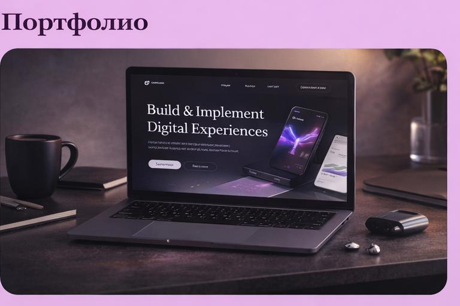
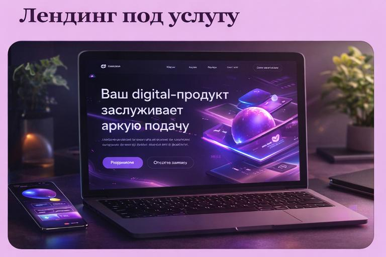

Сайт под ваши услуги
Помогаю объяснить, чем вы занимаетесь, простым и понятным языком
Web / Digital / AI
Продумываю не только внешний вид, но и то, как человек воспринимает сайт, понимает вас и принимает решение обратиться
Я создаю сайты, которые легко читать, приятно смотреть и которым доверяют.
Без перегруженности, сложных формулировок и «непонятно для кого». Человек заходит — и сразу понимает: куда он попал, чем вы полезны и почему стоит обратиться.
Я работаю с проектом целиком: от идеи и структуры до текста и внешнего вида.
Вы можете прийти без чёткого понимания — я помогу собрать всё в понятную и работающую систему.
Моя задача — чтобы ваш сайт не просто был, а действительно работал на вас.
Помогаю объяснить, чем вы занимаетесь, простым и понятным языком
Страница, которая аккуратно подводит человека к решению написать вам
Сайт, который показывает ваш уровень и вызывает доверие
Помогаю разложить информацию так, чтобы её действительно читали и понимали
Без перегрузки — только то, что помогает воспринимать и принимать решение
Собираю первую версию сайта в разумные сроки, без затягивания
Сначала понимаю, чем вы занимаетесь и какой результат вам нужен
Перевожу сложное в понятное: что сказать, в каком порядке и как это подать
Делаю аккуратный, понятный и современный сайт, с которым вам комфортно работать
Несколько направлений: от упаковки эксперта до концепта страницы — аккуратная подача и понятный смысл.

Результат: стало проще объяснять и получать отклики

Результат: увеличилось количество заявок

Результат: усилилось ощущение профессионализма
Результат: современный и запоминающийся формат
Я не усложняю.
Объясняю простым языком, помогаю разобраться и беру на себя структуру и подачу.
Вам не нужно заранее всё продумывать — я помогу собрать сайт из того, что у вас уже есть.
Инструменты
Использую технологии, чтобы сделать быстрее и лучше, но думаю в первую очередь о людях, которые будут смотреть сайт
Хороший сайт — это когда человеку всё понятно и у него появляется желание вам написать
Разберём вашу задачу и соберём решение без лишней сложности
Telegram @yourname
Email your@email.com